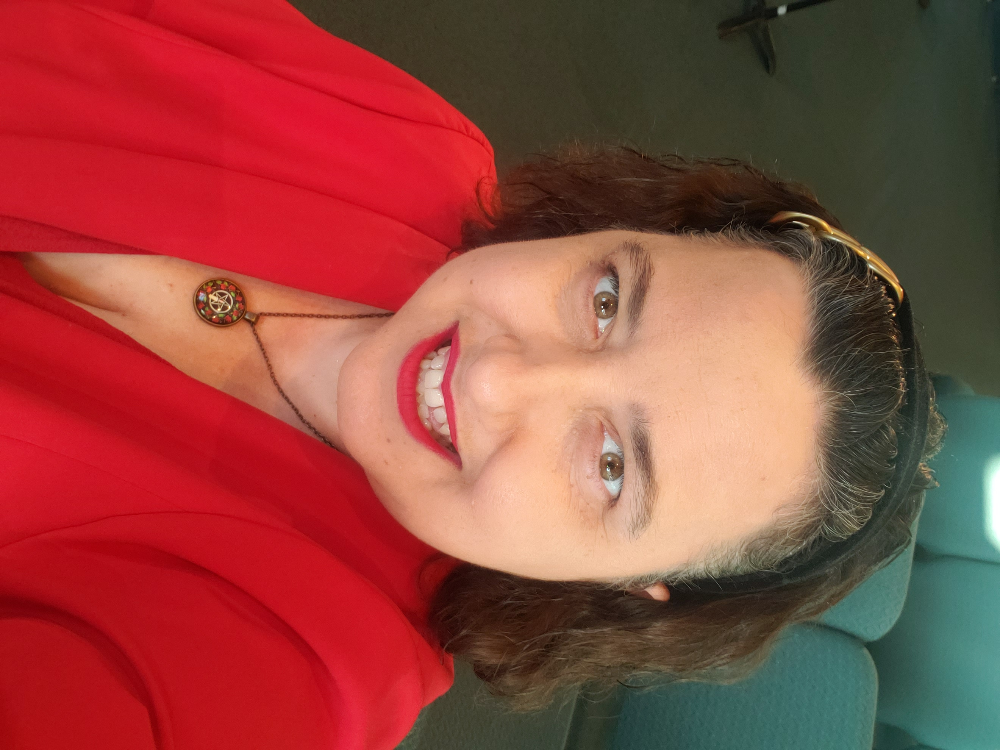
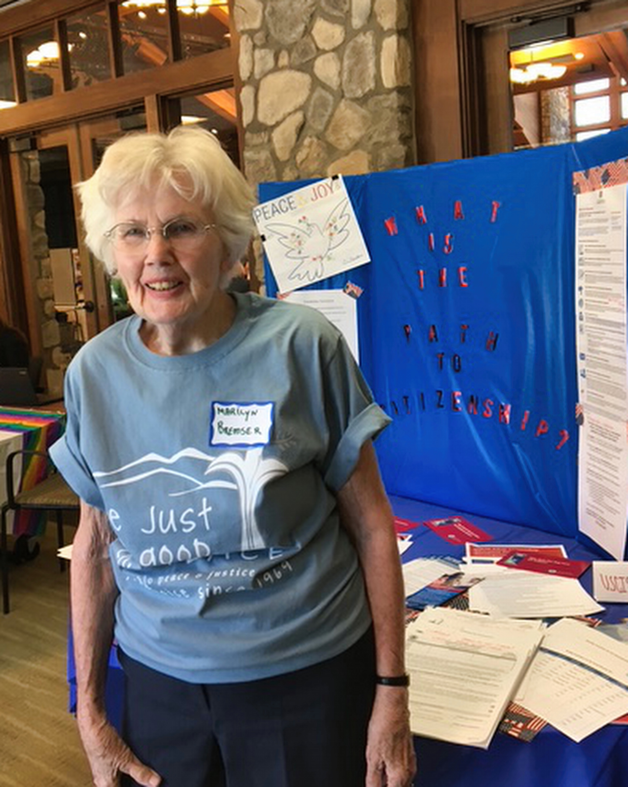

Rossmoor Unitarian Universalists - Past Programs
March 14th, 2025
Interfaith Harmony and Identity
In a thought-provoking and interactive presentation, Rose explored the challenges and opportunities of navigating multiple religious beliefs and identities within a single community or individual in the past. How could one building or person have created a welcoming environment for diverse spiritual practices during that time? Can individuals who held multiple identities that may seem at odds with each other have existed?
Rose's past presentation delved into the complexities of interfaith harmony, questioning whether someone could have been both a Christian and a Buddhist, an atheist and a Muslim, or any other combination. She encouraged attendees to share their own reflections on these questions.
Reverend Rose Riedel
Rose Riedel is completing her Masters of Divinity at Star King Seminary. Before her call to ministry, Rose was a professional stage actor and a professional clown.
February 14, 2025
Path to Citizenship
This program focused on the complexities of immigration, specifically the "Path to Citizenship" offered to holders of green cards and certain visas. The program explored this topic in depth, providing an overview of the eligibility requirements, the role of language proficiency, and how individuals can prepare for the 100 civics questions required for naturalization.
The speaker shared their experiences working with various organizations promoting citizenship, offering valuable insights into what it takes to succeed in this process. The meeting provided a platform for attendees to ask questions and seek guidance on the path to becoming a U.S. citizen.
Marilyn Bremser
With 27 years of experience living abroad and teaching English as a second language, Marilyn has firsthand knowledge of the challenges faced by immigrants seeking citizenship. Her own personal journey with the complexities of the citizenship process inspired her to shift the focus of her ESL classes in Corpus Christi to classes that would help immigrants achieve this goal.
January 10, 2025

UU Values in a Time of Uncertainty
In June 2024, the Unitarian Universalist General Assembly updated their bylaws with language describing Unitarian Universalism through the shared values interdependence, pluralism, justice, transformation, generosity, and equity. Reverend Lemery lead a discussion around how to apply these values in our lives, day to day.
Reverend Rodney Lemery
Rev. Lemery has a Master's of Divinity from Meadville Lombard Theological School and advanced degrees in Epidemiology. He serves as the Associate Minister at Mount Diablo Unitarian Universalist Church. He is passionate about creating a better world through service, and relationship building. With previous experience as a prison minister with Worthy Now Prison Ministry and Solano County Jail, Rodney remains committed to a Love so big that it reminds us all that we are not the worst thing we have done. He lives in West Contra Costa County with his husband of 22 years and their furry companion, Basil.